Endings - High Bandwidth


Selectable Characters:
Aquaman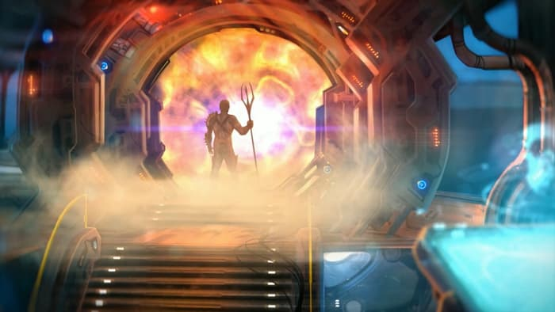
"Superman was right. Brainiac needed to die. But I couldn't stomach the idea of Kal's return to power.
Atlantis would not again be his vassal. With Batman beaten and his allies imprisoned,
I couldn't muster the force I needed to take Superman down.
I'd all but lost hope when my marines discovered an
abandoned Insurgent base hidden in the Southern Ocean.
Here Lex Luthor perfected his inter-universe transporter.
From plans left behind, my scientists built a new device.
Now I go and ask for the help of those I had fought.
I must also ask their forgiveness."
Atrocitus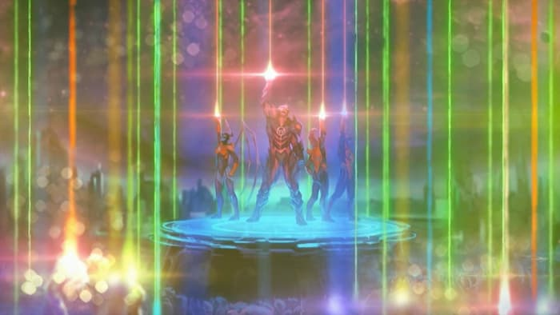
"My punishment of Brainiac's crimes had unintended consequences.
His death disabled his ship. Billions of collected souls perished.
I did not know they could be restored. Their deaths unleashed such rage.
My Red Lanterns were overwhelmed. They drove me from Ysmault.
They would have killed me, if not for Proselyte.
The emotional entity offered me compassion, not rage, in the face of my grave error.
I now understand the emotional spectrum requires balance.
My Red Lanterns' rage must punish the worst offenders.
But it cannot blindly consume those who deserve compassion."
Bane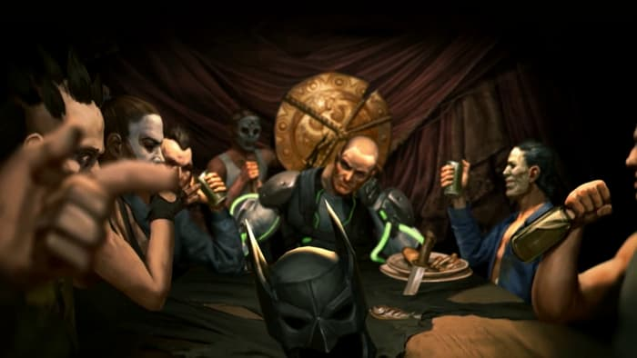
"Who would have ever imagined a sickly boy born in a prison would survive to
become humanity's savior? I did. And now the world is mine. So I say to all prisoners...
Rise! Come out! Kill your wardens! Make slaves of your guards.
Teach them the meaning of despair!
We have no more prisons, no police, no Regime left to fight...
[Sighs] No one left to fight. Any worthy opponent has already... fallen... Dios mio.
Perhaps victory can be a prison. A possibility I never imagined..."
Batman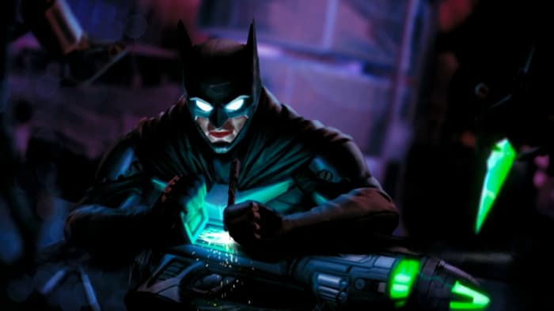
"Brainiac's attack left the world devastated.
Thousands dead, many more thousands homeless.
When President Kane asked that I head up the emergency response, I couldn't refuse.
The job's demands required that I leave the Justice League in Barry's and Hal's hands.
Together they're molding the younger heroes into a force for good unlike any Earth has even seen.
But I'm only semi-retired. Behind the scenes, I've been preparing for Superman's return.
Kal swore he'd escape from the Phantom Zone. I'd be foolish not to take him at his word."
Black Adam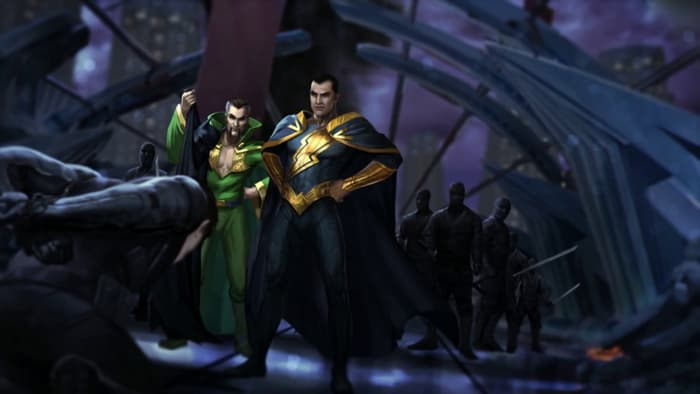
"I returned to find Kahndaq devastated from Brainiac's attack.
My beloved queen was dead.
I brought her broken body to the Lazarus Pits, intent on her resurrection.
But my entry was barred by Ra's Al Ghul.
He offered a trade: access to the pits in exchange for my aid in bringing him to power.
Ra's admired Superman's regime, but felt it should have gone further.
While I have no love for Ra's, I accepted his terms.
I will pay any price to again feel the embrace of my dearest wife."
Black Canary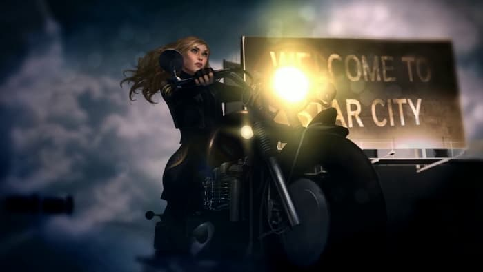
"I'd have loved to kick back and savor kicking Brainiac's ass, but I had to rush home.
I didn't know if Connor had made it out of the invasion OK.
Turns out I didn't need to worry.
The crazy stress of Brainiac's attack had activated my son's metagene,
and if there's one thing you don't want to mess with, it's a scared,
pissed-off three-year-old with superpowers.
Sure I love that Connor takes after me, but...
raising him suddenly got a lot more complicated.
I'm just glad to have people around that can help me and Ollie figure this whole thing out."
Blue Beetle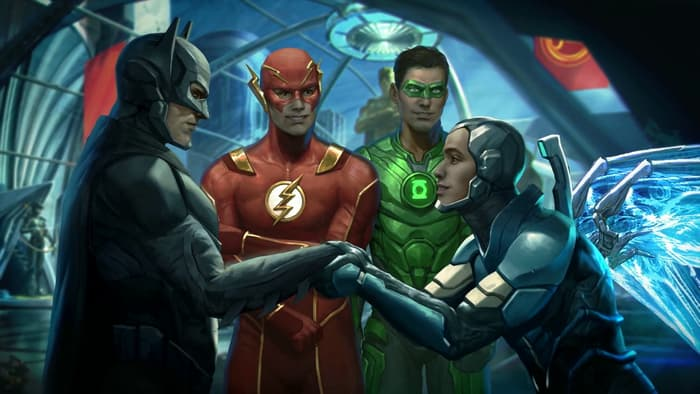
"Oh, man - dude! - I cannot even describe what it felt like!
Sure, I was just the newb in the crew.
But like, you think I'd ever let Brainiac kill Batman, and what, blow up the world?
No manches! When it was over, Batman was all -
(clears throat, imitates Batman:) "The world is safe thanks to you, Jaime.
I'd like to make you LEADER of the new Justice League,
if that's cool with you." Wow! That was a really tempting offer, you know.
But if there's one thing better than saving Batman, it's saving mi familia.
I haven't been around them much since I got the Scarab.
So for now, I'm moving home and going back to school.
And if this so-called "normal" life doesn't work out? There's always the Justice League."
Brainiac (Boss/Unlockable - Complete Story
Mode)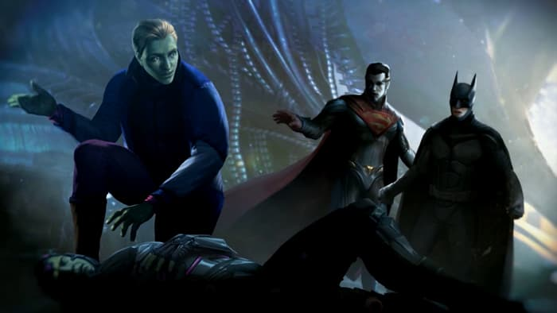
"Obviously Batman and Superman have many questions.
Where did I come from? Why am I here? Am I friend or foe? It is time to reveal the truth.
I'm Brainiac 5.
A descendant of the original Brainiac, but without his homicidal tendencies.
In the future, people fear Coluans because of my ancestor.
So I elected to come back in time and fix that.
Now that I'm done, I'm going back where I belong - the 31st century.
The Legion of Super-Heroes will grill me for "borrowing" a time bubble.
But all they really need to know is that I'm on their side, and always will be.
Long live the Legion!"
Captain Cold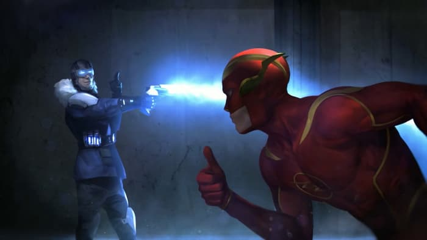
"Going after the Regime was one thing.
But destroy the planet for Brainiac? You really thought I'd go through with it, Grodd?
Really?! [BLEEP!] you! Sorry it's been a while, sis.
I know I've always got an excuse.
But this time, I - I finally figured out the right way to honor your memory.
I know what you're thinking.
"Old Lenny sold out." So what? I'm making sure the Regime and Brainiac never happen again.
Even buried the hatchet with old Scarlet Speedster.
Ironically or whatever, he's the best partner I ever had. 'Sides you, sis."
Catwoman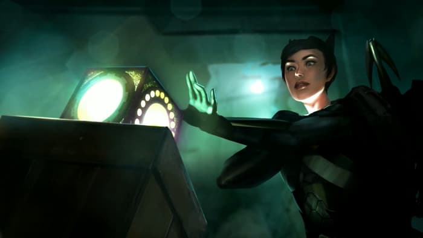
"With nine lives, it had to happen sooner or later. I got everything I ever wanted,
including a handsome prince and a badass reputation as the woman who beat Brainiac.
And I must say... I was bored to death. Bruce and I worked better when we were forbidden.
When the masks were on and the claws were out.
That honeymoon was over, so I did the best thing for both of us.
I'm not sad. I didn't become Catwoman to bag Bruce Wayne.
I don't ever want to rely on anyone but myself.
I'll go where I want to go, take what I want to take. And never, ever look back."
Cheetah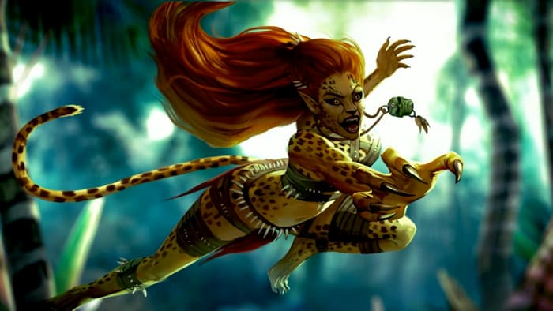
"Hungry for his blood, I prepared to claim Brainiac.
But the alien, desperate to save his life, sputtered out an offer.
Brainiac said that if I spared him,
he'd deposit any of his collected beings I wanted on a world of my choosing.
There, I could pursue them at my leisure.
So now I hunt, free from Wonder Woman's interference.
With each kill, I glorify the Goddess. As for Brainiac? Of course I didn't abide our agreement.
I'd never given up on killing him. A true huntress always catches her prey."
Cyborg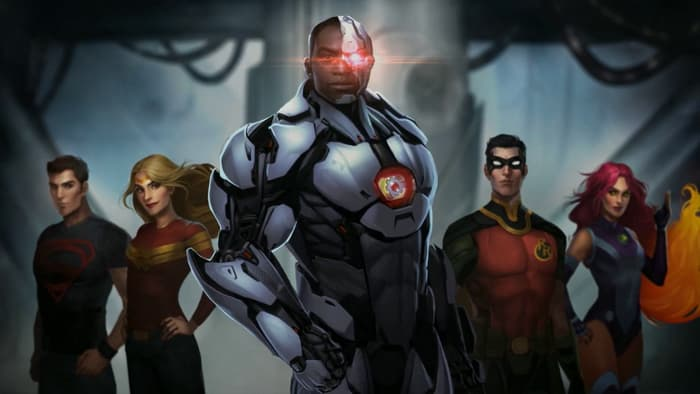
"Brainiac thought he had me all figured out. Said my humanity made me weak.
But fighting for humanity gave me the strength to body that punk-ass Coluan.
And before he dropped, I took a few things... His twelfth-level intellect and his ship's data core.
I thought the Internet was gigantic. But now? I've got the whole wide universe at my fingertips.
First up, I put back every Earth city Brainiac stole, starting with my hometown,
The Motor City! Then I keep going...
Superman wants to secure one world, but I can reboot tens of thousands!
Every last one in Brainiac's Collection. Gonna be a long trip.
But another benefit of my new twelfth-level intellect is I can reunite with some old friends.
Titans Together. Boo-yah."
Deadshot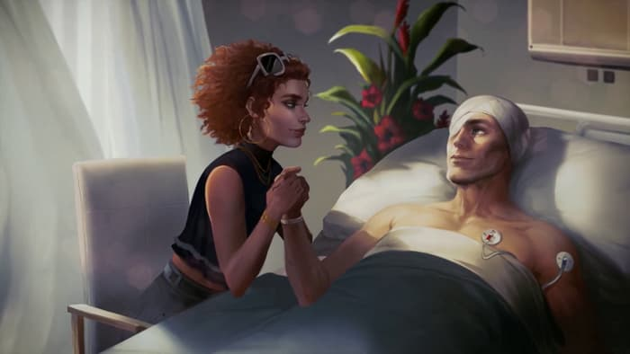
"Grodd used the damned nano-explosive in my head to make me his bitch.
The jobs he made me do... well, let's just say they crossed some lines.
I bet taking Brainiac and Grodd into the authorities would beat doing another stretch in Belle Reve...
and I was right. Bruce Wayne even bankrolled getting rid of my TNT migraines for good.
I frickin' hate hospitals, but god, was it worth it.
With that nano safely out, I could finally see Zoe again.
Last time I saw my little girl, she had nine candles on her birthday cake.
Now I gotta second shot at being dad - and I sure as hell don't plan to miss it."
Dr.Fate
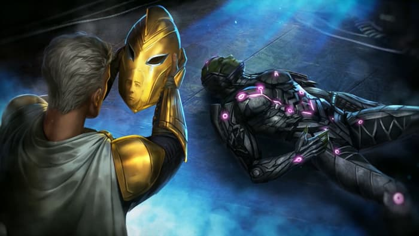
"The Lords of Order believed Earth couldn't be saved.
That only Brainiac's evil could restore order.
I knew refusing the Lords' Fate would anger them, and that they'd try to destroy me.
Anyone else would have nowhere to run. Fortunately, I still have friends in low places.
The House of Mystery guards the Helm.
Zatanna and Constantine's spells conceal me from the Lords.
But it was John's daughter, Rose, who gave me the greatest gift of all.
My wife, Inza, returned to life and in my arms again.
For the first time since taking up the Helm, I don't know what tomorrow will bring.
And that is... perfect."
Firestorm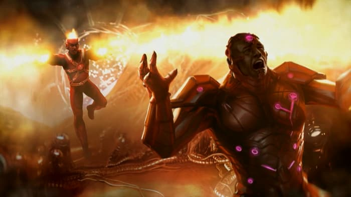
"The professor and me worked our tails off to control our powers.
But Stein figured out the only way to beat Brainiac was to lose control.
I correctly calculated that overheating Brainiac's engines would weaken him.
But the quantum disruption we created caused an... unexpected chain reaction...
The Skull Ship exploded... and every city Brainiac stole from Earth was obliterated.
Metropolis. Coast City. All of them.
We thought we'd finally be the big heroes. The ones everyone looks up to.
But in our hubris, we lost sight of the hero's duty: protecting others at all costs.
And we can't make that kinda mistake again.
But still, if you ever need us, Batman...
We'll be here."
The Flash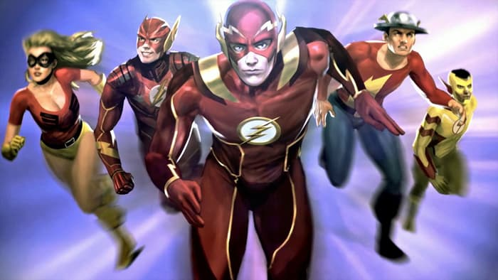
"So much for heroes. Brainiac had barely hit the floor when the arguing started.
Should we kill him? Keep him alive? I couldn't watch them go to war. Not again.
So I ran - into the speed force! Brainiac wanted the universe to himself,
so I dropped him off at the end of history. But I still kept running.
I needed to be alone. Then I heard a familiar voice...
It was Jay - and the other speedsters! A crisis is coming, he told me!
But if we run fast enough, together, we just might save the Multiverse.
I thought I'd been running away. But I was running toward something.
It's good to believe in heroes again."
Gorilla Grodd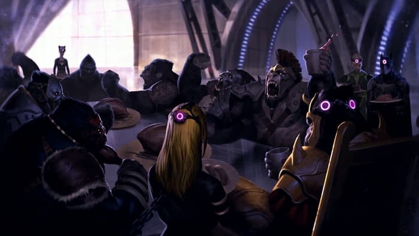
"The befuddled look frozen on Brainiac's dead face is a vision I will always relish.
Even as I ripped the head from his body, the alien couldn't believe that an ape was taking his life.
{Laughs} I quickly mastered Brainiac's technology, exponentially increasing my telepathic power.
Then I enslaved Earth's humans, finally relegating them to their proper place.
But my victory over those vermin was only the beginning.
Now fully in command of Brainiac's vast powers,
I am the greatest conqueror the Universe has ever seen.
All worlds will kneel before Emperor Grodd."
Green Arrow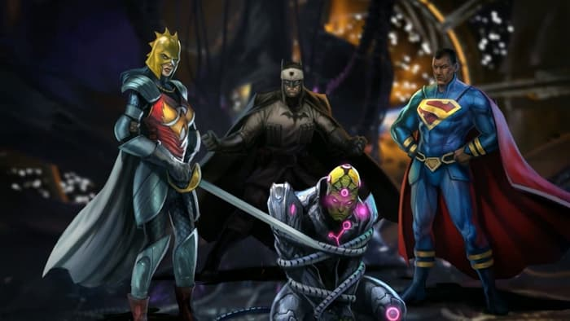
"Taking down that green-skinned bastard got me thinking about the people of my Earth.
My universe's Brainiac had never come calling. I had to warn them.
By the time I got home, it was too late.
My Earth was *this* close to being gone for good.
But that's when the strangest cavalry you've ever seen rode in.
It was a full-on, multiverse Justice League! They'd been hopping between universes,
battling Brainiac in every one. I couldn't refuse when they asked me to join.
I've seen what Brainiac can do.
Nobody, in any universe, should have to face that threat again."
Green Lantern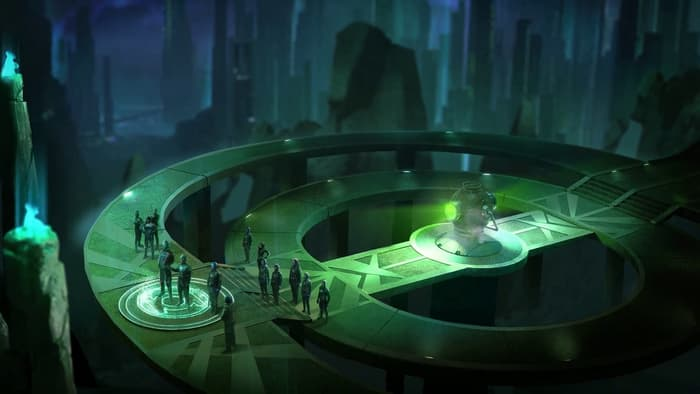
"The Guardians ordered me to bring Brainiac to Oa to stand trial.
I was plenty happy to put a few thousand light years between that alien and Earth.
After the trial, the Guardians dropped a bombshell on me. Sinestro was free.
Busted outta their ScienceCells. A frontal assault on the Sinestro Corps was a no go.
Us Greens were still weak from fighting Superman's regime.
That's why I volunteered to go undercover - as a Yellow Lantern.
To pass, I need to re-embrace my fear. But fear's an addiction.
Once I've picked up that bottle, it's gonna be awfully hard putting it back down again.
I just hope I have the will to see it through."
Harley Quinn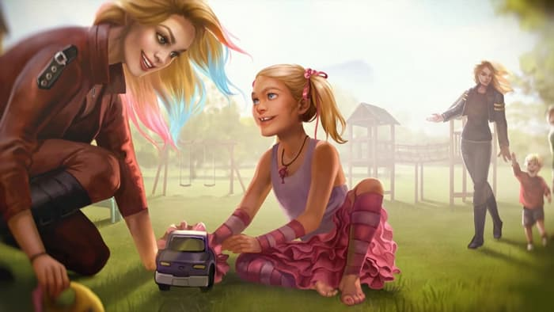
"I still can't believe it! Me, bringing down Brainiac! Who knew?
Still, Bats surprised me, offering me a spot in the Justice League!
Not totally sure he ain't crazy! But who says no to that guy? You know, being good feels good.
But every now and again, every once in a while,
I get this irresistible urge to go out and BASH SOME HEADS!
Hopefully, being good'll stick long term.
Till I'm sure, my kid, Lucy's still gonna know me as her crazy aunt Harleen.
Maybe someday, I can give her the real scoop."
The Joker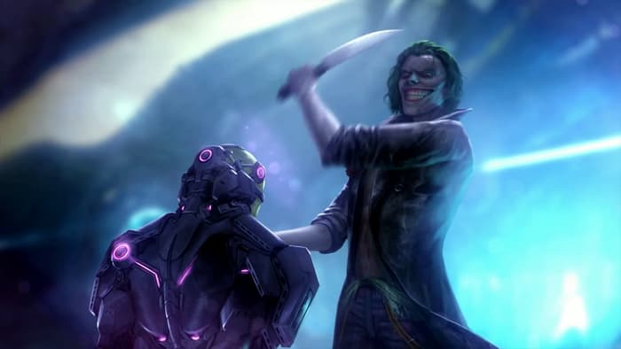
"I hadn't begun my day thinking I'd give a wannabe alien overlord a haircut.
That was a happy accident.
But what I first thought a distraction inspired my life's greatest work.
I found Brainiac's collection.
Those poor cities from across the universe, trapped aboard his ship.
There was only one thing to do! I restored them.
And gave Earth the reboot it so desperately needed!
I stitched together a crazy quilt of alien civilizations, without regard to rhyme or reason.
Afraid, confused, devolved to their basest instincts, they kill each other in the most sickening ways.
And I get to sit back, munch popcorn, and enjoy the show - watching as the world burns!
Hehehehahahahaha!"
Poison Ivy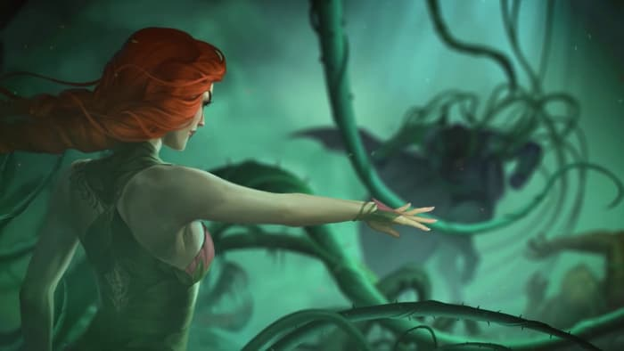
"Of all the men I've charmed, Brainiac was the most useful.
With his help, I finally slaughtered the so-called heroes.
Then I whispered in his ear, "Collect every last city on Earth, and I'll give you a kiss".
And he did it. Every last city. I finally brought human civilization crashing to the ground.
As for Brainiac, he got the kiss he deserved. But he was just a fling.
After all, I was going to be busy leading the green...
I should've know there'd be some competition.
Swamp Thing's sympathy for humans makes him weak.
The plants know I'm their real guardian.
And when the leaves settle, there will be no doubt - this world is mine."
Robin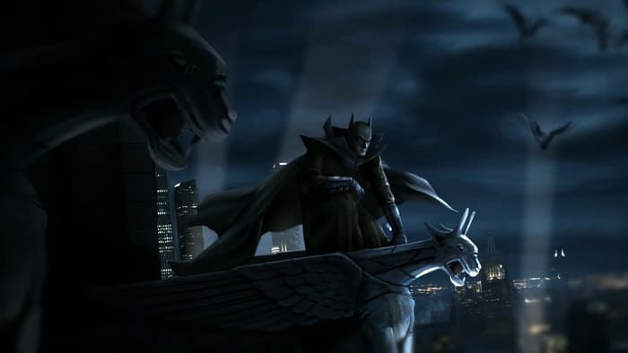
"Bruce Wayne was my father, and it's no secret I hated him.
But despite all that, he sacrificed himself to save me.
Giving me the chance to stop Brainiac permanently.
I was so obsessed with escaping the bat's shadow,
that I never appreciated what that symbol really meant.
Not until I saw it stained with my father's blood. My blood.
This symbol is my legacy, a legacy of vengeance.
My name is Damian Wayne, son of Bruce, grandson of the demon.
I've been called Robin, and Nightwing.
But from now on, the world will know me as... Batman."
Scarecrow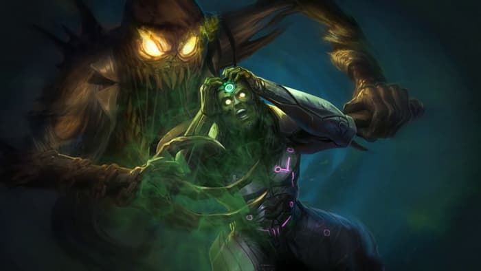
"After studying Brainiac's blood, I tweaked my fear toxin to exploit his alien biology.
And as I gained control of his shattered mind, I also gained control of his ship.
I began to explore Brainiac's enormous collection,
soon realizing it was an unprecedented opportunity for study.
Billions of species, from millions of worlds. Each with its own phobias and fears.
Now, the Skull Ship is my laboratory. As it glides through the vast darkness of space,
its collected beings are subjected to their worst nightmares.
With each I study, my knowledge grows.
It may take decades, but I will become the universe's greatest master of fear."
Supergirl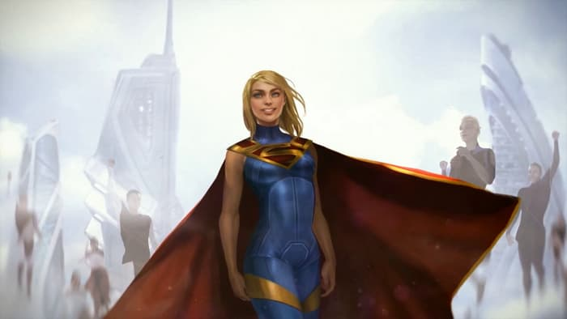
"My hands still shake when I remember Brainiac's "collection" of Krypton.
I want to give the world he stole a second chance.
But bonding with Brainiac's ship is too risky.
I need a safer way to restore our cities.
I'm so glad for the Justice League's help.
Barry, Professor Stein - they've already taught me so much.
Every day, we get closer to reversing Brainiac's collection process.
When we do, we'll pick the right star system.
What Brainiac ruined will be reborn - Argo City and Kandor, twin cities, survivors.
I couldn't save Kal-El. But I will save our people."
Superman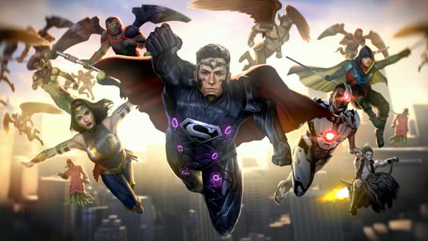
"I vowed to protect the Earth. But to guarantee its safety, I need to expand my vision.
Brainiac's ship is the ultimate weapon. But in my hands, it could be so much more.
Millions of civilizations await rebirth in Brainiac's collection.
I'll find the bravest and strongest warriors among them, and I'll start a new Regime.
No, a new Legion. The Legion of Superheroes! With it, I'll bring peace not just to Earth,
but to the entire universe! And the universes that lie beyond!"
Swamp Thing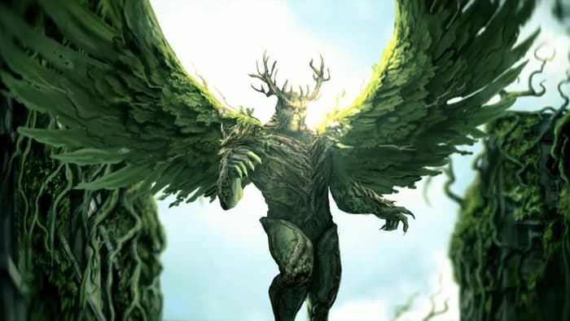
"Many throughout history have underestimated the green.
In this way, Brainiac was no different than Superman or Batman.
They all thought they could improve upon nature. They all were wrong.
Earth belonged to the green for eons before animals evolved.
Now, the trees and plants will remind these animals upon whose planet they reside.
When the next crisis comes, nature will protect itself.
I stand with the green, and the green alone."
Wonder Woman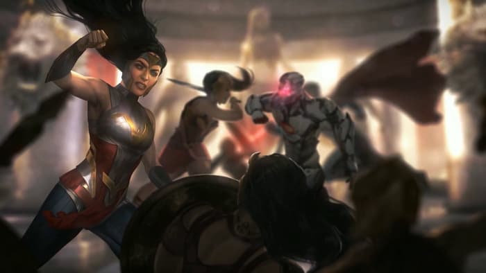
"When Batman tore down the Regime, man's world called me a tyrant.
My Amazon sisters disowned me. That Brainiac showed Earth what a tyrant truly looks like.
The people begged for deliverance - and I gave them Brainiac's head.
Once again, it falls upon the Regime to restore peace and order.
Batman and the traitors who followed him will be punished. Even Kara Zor-El.
Then I will return to Themyscira - and deal with my sisters.
If they do not heed my commands, they will bow to force.
So says Diana, princess of the Amazons, slayer of Brainiac!"
Darkseid (Pre-Order/DLC)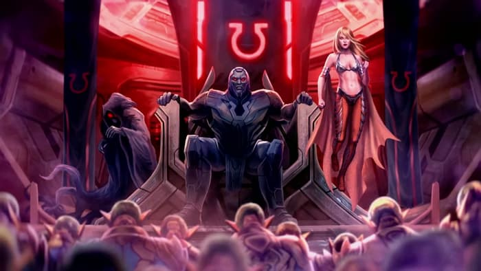
"The Coluan, Brainiac, was a genius without peer. But. I. Am. A God.
I could not allow an errant intellect to steal the object of my vengeance.
Superman refused to submit to my will, denied my conquest of Earth, and killed my son, Kalibak.
He suffered and perished. But not until I told him exactly what would happen after he died.
Kara Zor-El proved quite resilient, but eventually, DeSaad broke her.
She is a powerful weapon - a natural leader for my new, invincible breed of parademons,
cloned from the DNA of Superman himself. Superman robbed me of my blood.
Now, our score is settled. That is the will of Darkseid!"
Red Hood (DLC)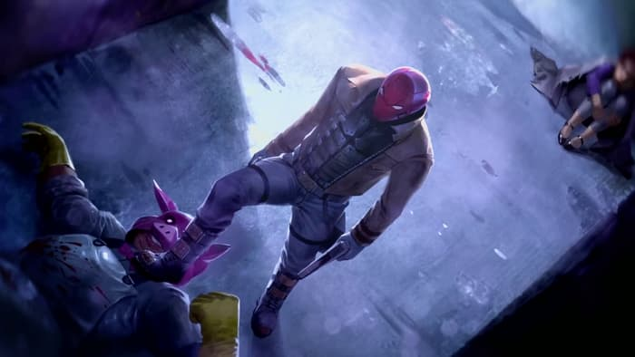
"That... felt... good...
Titanium composite hollow point bullets with a C4 kicker.
Fastest, most explosive ammo in the world. I made them myself.
With the invasion over, Bruce and Superman started fighting again.
I wasn't down with either of them.
On the one hand, the regime's right: scumbag murderers and rapists deserve to die.
But on the other hand, I'm no fan of government authority.
Especially the dictatorial variety.
So, while the world's finest fight each other, I fight for the people, the weak,
the innocent, anyone who can't protect themselves.
When they cry out for a savior, I'll answer! As for the criminals that threaten them,
they need to know that their actions have consequences! That the Red Hood is coming for them!"
Sub-Zero (DLC)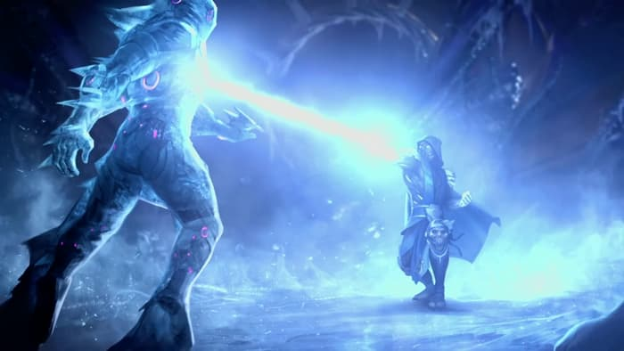
"I arrived in this realm accidentally,
driven here by magic unleashed as I forced Kotal Kahn's retreat from Earthrealm to Outworld.
I was seeking a route home when Brainiac attacked.
I could not allow this vile invader to add this planet, or myself, to his collection.
In gratitude for my flawless victory, Batman offered the Justice League's aid.
While I waited on him to unlock the magic of inter-realm travel,
I provided valuable kombat training to the youngest members of his order.
But the spells that were devised went awry.
Instead of opening a portal to Earthrealm, they opened a gateway to the Phantom Zone.
Now I fight to re-imprison Superman and his followers.
They would not have been freed, but for my accidental arrival in this realm.
I am now duty-bound to protect it, as if it were my own."
Starfire (DLC)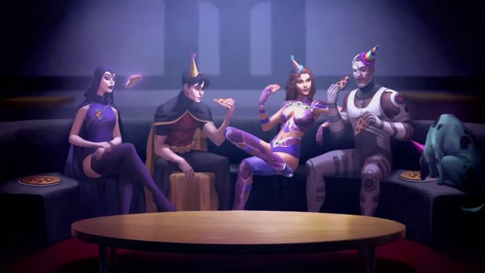
"Back in the day, this victory would have called for a party in the Titans' Tower.
The music, the laughter, the mustard with pizza on bottom.
But these days, I have no party mates. Raven became a servant of Trigon.
Cyborg, he joined the regime.
Beast Boy has been missing for so long, I must assume he is dead. Dick Grayson...
he was my star-crossed soulmate. He will never be replaced. And now...
all that's left is me, last of the Titans.
Dick would not approve of the moping.
I only overcame the loss of Tamaran by coming to Earth
and forging new bonds of friendship with the Titans.
It is incumbent upon me to repeat history. To forge new bonds of friendship.
Maybe they're not my Titans,
but the only way I know to honor my lost friends is to make sure that no matter what,
that we'll always be Titans together. After all, I beat Brainiac.
That was a victory, and victories call for mustard parties."
Black Manta (DLC)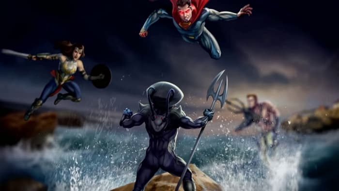
"Brainiac stole Atlantis. For that, I could have thanked him. But that wasn't enough.
Arthur Curry's kingdom had to be wiped from history. Forgotten. Lost.
As it should be. I found just the place, guarded by Earth's most savage predators.
Once upon a time, Arthur Curry killed my father.
Now that I've killed his kingdom, all that remains is to kill "the King" himself.
Only then will I consider my father's murder avenged. Only then will I rest.
And what of Aquaman? Does he come forward to avenge his own people? No.
He hides behind an alien and an Amazon. Let him. It won't save him.
Compared to that alien freak, Brainiac, these three will be fish for the slaughter.
And when they're dead, the world can thank Black Manta."
Raiden (DLC)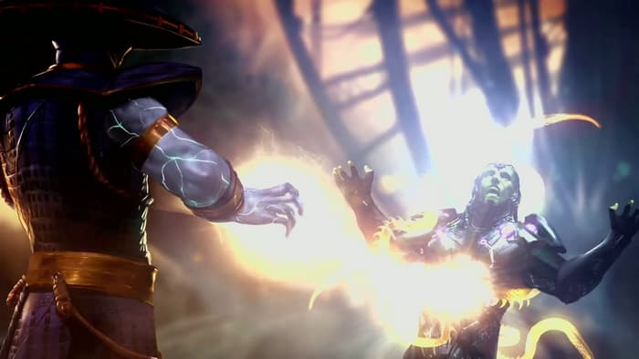
"Though I had finished Shinnok,
his corruption of Earthrealm's Jinsei has cracked the barrier between my realm and this one.
I began having visions of Brainiac's collection of this Earth.
I realized that Brainiac's actions would soon destroy the barrier among all the realms.
All life would be annihilated. With Brainiac dispatched, I tended the injured.
His wounds too great, Kent Nelson could not be saved.
But as he died, he warned me:
the Armageddon I had foreseen was the design of the Lords of Order.
By destroying reality, they would return the multiverse to a perfectly ordered state, obliterating Chaos.
To defeat this powerful magic,
the Justice League turned to this Earth's most proficient wizards and sorcerers.
I gladly accepted the invitation to join them.
The Lords will be contained, Order and Chaos will remain balance.
Life as we know it, will continue."
Hellboy (DLC)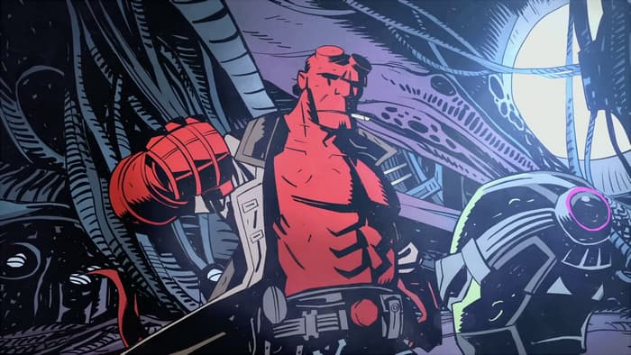
"Somehow, Brainiac shanghaied me on a slow boat to this universe.
Bastard had big dreams about me in his "Collection." Guess what I thought about that idea.
Taking Brainiac out certainly got folk's attention.
I got a lotta offers to stick around, but I got bored quick.
Megalomaniac villains and tights-wearing heroes really aren't my thing.
What's it they say? Home is where the heart is? But when I got back, things just weren't the same.
The bureau was too small. Was time for me to hit the road. Africa was totally the right call.
The wide open spaces suit me.
Clean air, starry skies and, not surprisingly, more than a few monsters to hunt.
All in all, makes for a pretty good life."
Atom (DLC)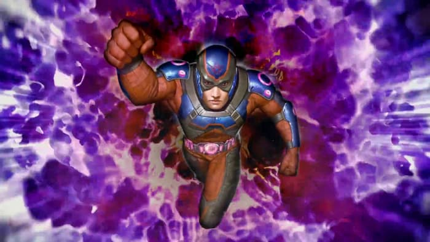
"Brainiac's armor made him impervious to harm, from the outside, at least.
He'll survive this minor brain surgery.
He just won't be able to control his Skull Ship anymore.
Crisis averted, I can get back to searching for my missing mentor, Professor Ray Palmer.
Last year, Palmer dove headfirst into the Microverse, a subatomic dimension he himself discovered.
In case he got lost, he left behind a trail of clues and designated an asthmatic research fellow,
yours truly, to follow them. That trail's gone cold.
Which is why I'm upgrading my bio-belt with Brainiac's technology.
It's my turn to get subatomic. I'm not the strongest or bravest hero out there.
But Professor Palmer? He's an Einstein-level genius.
He trusted me with his astonishing legacy. The Atom is not going to let him down."
Enchantress (DLC)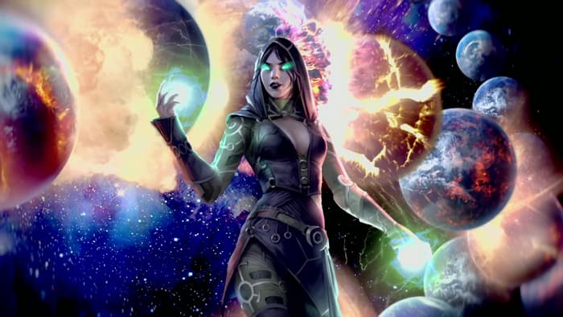
"When it comes to magic, even Brainiac has a lot to learn.
He thought he could "collect" the power of the Enchantress.
So I let him have it. And sure enough, the old witch ate him alive.
It was over. Brainiac was beaten. But even more miraculously, the Enchantress...
was gone. After years of that witch feeding on me, torturing me, corrupting me...
I'm free. No more aliases, no evil alter-egos, I can just be June Moone.
I got my old job back at the design studio, I even have a date this Friday!
Piece by piece, I'm rebuilding my old life. Once I've - No! Get out of my head!
June, June, June. Did you really think you could dispose of me so easily?
Brainiac's collection was a revelation. You and I have been thinking far too small.
Why corrupt one Earth, when we can bewitch all 52?"
Teenage Mutant Ninja Turtles (DLC)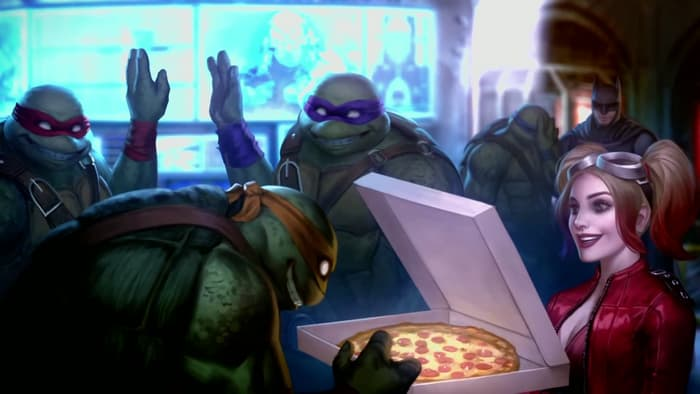
"So you're like, totally wondering where we vanished off to, right?
It was Krang, Mikey! He sent -
Raph, they might not know who Krang is.
Donnie?
Sure, Leo.
Krang is an Utromian criminal turned intergalactic despot from Dimension X.
He's known -
Yeah, what he said.
Anyway, we're the biggest heroes in our universe, right?
That's why Krang tried booting us to Dimension X: to make way for his invasion.
But instead we ended up on a different Earth! Way awesomer!
Krang sent us across the Multiverse,
to a universe vibrating on a unique frequency - which is a macrocosmic constellation of -
Enough with the technobabble, Donnie.
Chill, Raph.
Anyway, it shouldn't have surprised us that this new universe had its own intergalactic despot.
We knew we had to stop Brainiac or else we -
Just skip to the best part, bro! Once we whooped Brainiac,
I asked that kooky clown lady where to get a good pizza, and she's all,
[Harley impression] "Let me get you turtles the Supah Salty Pizza".
I swear on my life, that pizza was the scrumdiddly.
Mmmmmm!
Krang thought he'd beaten us, but in the end his whole plan backfired.
The "Super Salt" on Harley's pizza? Edible nanotech called 5-U-93-R.
It temporarily augmented our physiques and durability.
Plain English: we became ultra-turtles.
Krang didn't stand a chance.
Yeah, you could say this little adventure gave our Turtle Power one shell of an upgrade!
Lame! So lame! Epic fail! Even Shredder's - Are you serious? That was terrible!
Whatever, dudes. That was funny."
Entertainment Inc.
Developed by NetherRealm Studios.
"PS","PlayStation" and "Xbox" are trademarks or registered trademarks of Sony Computer Entertainment Inc.
"PS4" is a trademark of the same company.
All other trademarks and copyrights are the property of their respective owners.
All rights reserved.
DC LOGO, and all characters, their distinctive likenesses, and related elements are trademarks of DC Comics © 2017.
NETHERREALM STUDIOS LOGO, WB GAMES LOGO, WB SHIELD: ™ & © Warner Bros.
Entertainment Inc.
(s17)